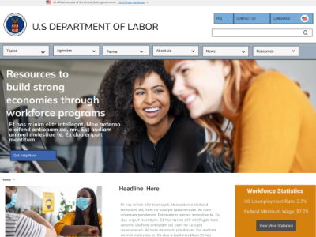
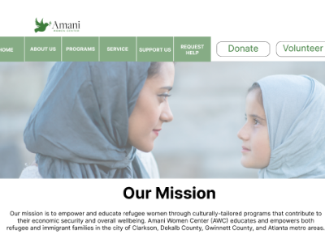
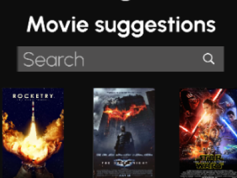

My Skills
- User Research
- Definition and Ideation
- Planning
- Gorilla Testing
- Competitor Analysis
- UX Design Thinking
- Storyboarding
- Affinity Diagramming
- Feature Prioritization
- User Persona
- Heuristics
- Sketch to Wireframing
- Prototyping & Testing
- Color & Assessibility
- Figma, Adobe XD
- Agile Project Management
- Visual Studio, Basic HTML
My Work

Case Study: U.S. Labor Department
Re-design of government website for content reorganization and ease of use.
Go somewhere

Case Study: Amani Women's Center
Non-profit site redesign targeting improved features for giving and volunteerism, plus content organization.
Go somewhere

Case Study: Buffers Movie App
Mobile application for movie watchers with custome watch party and profile features.
Go somewhere (404)493-6579
(404)493-6579
 johnettad@hotmail.com
johnettad@hotmail.com